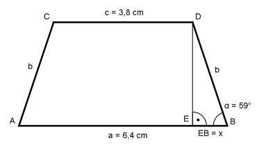

Aufgabe 53 Berechnen Sie die Länge der Seite b des gleichschenkligen Trapezes.

a - c 6,4 cm – 3,8 cm x = ------- = ------------------- = 1,3 cm 2 2 Im Dreieck EBD: x cos α = --- |*b b cos α * b = x |:cos α x 1,3 cm b = -------- = ---------- = 2,5 cm cos α 0,515